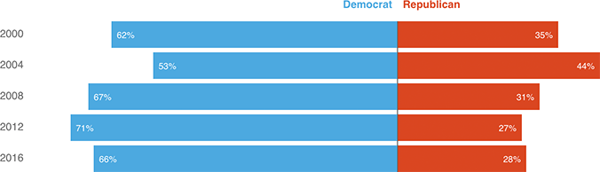

Is there a Latino Floor for Republican Presidential Candidates?
Share of voters who identified as “Hispanic” or “Latino” who said in exit polls that they voted for the Democratic or Republican presidential candidate
